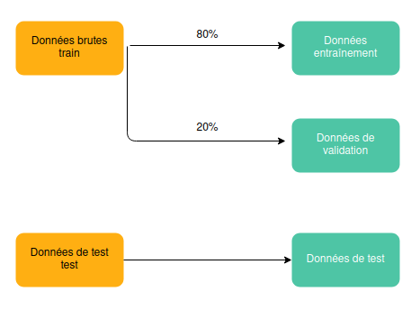

TD DSA 2021 de Antoine Ly - rapport de Fabien Faivre
2. Chargement initial des données¶
Dans cette section nous chargeons et séparons les données
2.1. Setup¶
#Temps et fichiers
import os
import warnings
import time
from datetime import timedelta
#Manipulation de données
import pandas as pd
import numpy as np
#Tracking d'expérience
import mlflow
import mlflow.sklearn
#Cellule strictement technique qui permet de sauver les exigences pour recréer au besoin l'image docker du projet
!pip freeze > /mnt/docker/requirements.txt
2.1.1. Utilisation du package¶
Durent ce projet, certaines parties du code ont été re packagées dans un package propre au projet afin de factliter la lecture du core et permettre la réutilisabilité des développements
#Cette cellule permet d'appeler la version packagée du projet et d'en assurer le reload avant appel des fonctions
%load_ext autoreload
%autoreload 2
from dsa_sentiment.scripts.make_dataset import load_data
from dsa_sentiment.scripts.evaluate import eval_metrics
from dsa_sentiment.scripts.make_dataset import Preprocess_StrLower, Preprocess_transform_target
2.2. Chargement des données¶
!pwd
/mnt/rapport/notebooks
data_folder = os.path.join('/mnt', 'data', 'raw')
all_raw_files = [os.path.join(data_folder, fname)
for fname in os.listdir(data_folder)]
all_raw_files
['/mnt/data/raw/sample_submission.csv',
'/mnt/data/raw/test.csv',
'/mnt/data/raw/train.csv']
random_state=42
Warning
Il n’est pas possible de faire de l’imputation comme avec des champs numérique. Il convient donc de supprimer les tweets vides (dropNA=True).
On laisse 20% de données de côté dans un jeu de validation. Afin de simuler des conditions réelles d’expoitation, le classement des modèles se fera sur le jeu de validation uniquement sans toucher au jeu de test.
A l’issue du premier classement les modèles seront réentrainés sur train + validation avant d’être évalués sur le jeu de test

X_train, y_train, X_val, y_val = load_data(all_raw_files[2], split=True, test_size=0.2, random_state=random_state, dropNA=True)
X_train.head()
| textID | text | selected_text | |
|---|---|---|---|
| 0 | cb774db0d1 | I`d have responded, if I were going | I`d have responded, if I were going |
| 1 | 549e992a42 | Sooo SAD I will miss you here in San Diego!!! | Sooo SAD |
| 2 | 088c60f138 | my boss is bullying me... | bullying me |
| 3 | 9642c003ef | what interview! leave me alone | leave me alone |
| 4 | 358bd9e861 | Sons of ****, why couldn`t they put them on t... | Sons of ****, |
print(f'le jeu d\'entraînement initial contient', X_train.shape[0] + X_val.shape[0] , 'lignes')
print(f'le jeu d\'entraînement retenu contient', X_train.shape[0] , 'lignes')
print(f'le jeu de validation retenu contient', X_val.shape[0] , 'lignes')
le jeu d'entraînement initial contient 27480 lignes
le jeu d'entraînement retenu contient 21984 lignes
le jeu de validation retenu contient 5496 lignes
y_train.head()
| sentiment | |
|---|---|
| 0 | neutral |
| 1 | negative |
| 2 | negative |
| 3 | negative |
| 4 | negative |
X_test, y_test = load_data(all_raw_files[1], split=False, random_state=random_state, dropNA=True)
X_test.head()
| textID | text | |
|---|---|---|
| 0 | f87dea47db | Last session of the day http://twitpic.com/67ezh |
| 1 | 96d74cb729 | Shanghai is also really exciting (precisely -... |
| 2 | eee518ae67 | Recession hit Veronique Branquinho, she has to... |
| 3 | 01082688c6 | happy bday! |
| 4 | 33987a8ee5 | http://twitpic.com/4w75p - I like it!! |
print(f'le jeu de test contient', X_test.shape[0] , 'lignes')
le jeu de test contient 3534 lignes
2.2.1. Transformation initiales des données¶
Cette partie vise uniquement à sélectionner les colonnes dont nous nous servirons et à transcoder la cible au format souhaité.
# Dans ce projet on ne se servira que du champs `text`. On cherche toutefois à conserver le format pandas DataFrame
X_train = X_train[['text']]
X_val = X_val[['text']]
X_test = X_test[['text']]
X_train.head()
| text | |
|---|---|
| 0 | I`d have responded, if I were going |
| 1 | Sooo SAD I will miss you here in San Diego!!! |
| 2 | my boss is bullying me... |
| 3 | what interview! leave me alone |
| 4 | Sons of ****, why couldn`t they put them on t... |
2.2.2. Aggrégation des données pour l’analyse exploratoire¶
df_train = pd.concat([X_train, y_train], axis=1)
df_train.head()
| text | sentiment | |
|---|---|---|
| 0 | I`d have responded, if I were going | neutral |
| 1 | Sooo SAD I will miss you here in San Diego!!! | negative |
| 2 | my boss is bullying me... | negative |
| 3 | what interview! leave me alone | negative |
| 4 | Sons of ****, why couldn`t they put them on t... | negative |
df_val = pd.concat([X_val, y_val], axis=1)
df_val.head()
| text | sentiment | |
|---|---|---|
| 21984 | _JessicaB_**** yip.....aw gonna miss them on bb | negative |
| 21985 | _violence heyyyy babyy | negative |
| 21986 | Up at 6am on Sunday... Going to meet my mom fo... | neutral |
| 21987 | so the Today show still hasn`t gotten in touch... | neutral |
| 21988 | Just checked email and got a follower withb sa... | neutral |
df_test = pd.concat([X_test, y_test], axis=1)
df_test.head()
| text | sentiment | |
|---|---|---|
| 0 | Last session of the day http://twitpic.com/67ezh | neutral |
| 1 | Shanghai is also really exciting (precisely -... | positive |
| 2 | Recession hit Veronique Branquinho, she has to... | negative |
| 3 | happy bday! | positive |
| 4 | http://twitpic.com/4w75p - I like it!! | positive |
2.2.3. Préalable à la modélisation : transformation des sorties¶
On commence par transformer les cibles pour se conformer aux instructions
y_train = Preprocess_transform_target(y_train, columns_to_process=['sentiment'])
y_train.head()
| sentiment | |
|---|---|
| 0 | 0 |
| 1 | -1 |
| 2 | -1 |
| 3 | -1 |
| 4 | -1 |
y_val = Preprocess_transform_target(y_val, ['sentiment'])
y_val.head()
| sentiment | |
|---|---|
| 21984 | -1 |
| 21985 | -1 |
| 21986 | 0 |
| 21987 | 0 |
| 21988 | 0 |
y_test = Preprocess_transform_target(y_test, ['sentiment'])
y_test.head()
| sentiment | |
|---|---|
| 0 | 0 |
| 1 | 1 |
| 2 | -1 |
| 3 | 1 |
| 4 | 1 |
2.3. On exporte les données sous parquet pour avoir une source de vérité unique dans les notebooks¶
# Données aggrégées
df_train.to_parquet('/mnt/data/interim/df_train.gzip',compression='gzip')
df_val.to_parquet('/mnt/data/interim/df_val.gzip',compression='gzip')
df_test.to_parquet('/mnt/data/interim/df_test.gzip',compression='gzip')
# Données explicatives
X_train.to_parquet('/mnt/data/interim/X_train.gzip',compression='gzip')
X_val.to_parquet('/mnt/data/interim/X_val.gzip',compression='gzip')
X_test.to_parquet('/mnt/data/interim/X_test.gzip',compression='gzip')
# Données à expliquer
y_train.to_parquet('/mnt/data/interim/y_train.gzip',compression='gzip')
y_val.to_parquet('/mnt/data/interim/y_val.gzip',compression='gzip')
y_test.to_parquet('/mnt/data/interim/y_test.gzip',compression='gzip')